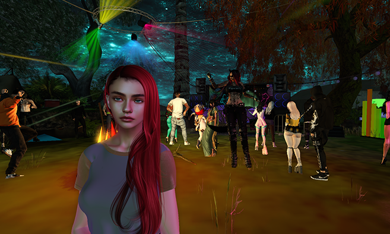

24/7 Open Air Stage
Available to all electronic music artists, anytime.

Open Stage Island is an evolving music community set in a beautiful natural environment where you bring the magic. This magical realism venue has grown over the past years to become a vibrant social hub.
Join the party, attend DJ school, and dance your avatar's bottom off. Discover freebies and interactive experiences. The open air stage is available 24/7 to all electronic music artists for live audience feedback — DJs and producers regularly show their skills.
Available to all electronic music artists, anytime.
Learn from experienced DJs and improve your skills.
Discover free items and interactive experiences.
Make friends and connect with the community.
A safe and welcoming space for everyone.
Anthro and furry avatars are warmly welcomed.